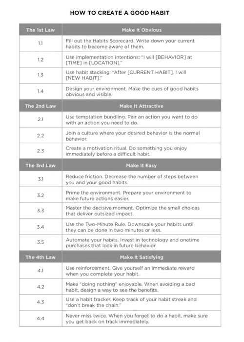
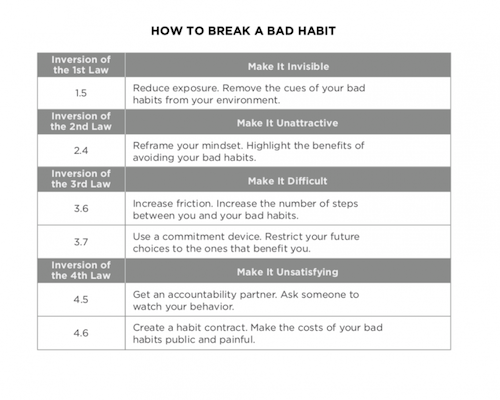

Recording your last action creates a trigger that can initiate your next one. Habit tracking naturally builds a series of visual cues like the streak of X's on your calendar. The mere act of tracking a behavior can spark the urge to change it.
The most effective form of motivation is progress. When we get a signal that we are moving forward, we become more motivated to continue down that path. In this way, habit tracking can have an addictive effect on motivation. Each small win feeds your desire. When you're feeling down, it's easy to forget about all of the progress you have already made. Habit tracking provides visual proof of your hard work--a subtle reminder of how far you've come.
Tracking can become its own form of reward. It is satisfying to cross an item off your to-dolist, to complete an entry in your log, or to mark an X on the calendar. It feels good to watch your results grow--the size of your investment portfolio, the lenght of your book manuscript--and if it feels good, then you're more likely to endure.
Whenever possible, measurement should be automated. You'll be surprsied by how much you're already tracking without knowing it. Additionally, manual tracking should be limited to your most important habits. It is better to consistently trakc one habit than to sporadically track ten. Record each measurment immediately after the habit occurs. The completion of the behavior is the cue to write it down. This approach allows you to combine the habit-stacking method with habit tracking. The habit stacking + habit tracking formula is: After I [CURRENT HABIT], I will [TRACK MY HABIT].
Just as governments use laws to hold citizens accountable, you can create a habit contract to hold yourself accountable. A habit contract is a verbal or written agreement in which you state your commitment to low through. Then you find one or two people to act as your accountability partners and sign off the contract for you.
The laws and steps from each page leave us with two main charts, one for how to create good habits, and the other for how to break a bad habit (law inversions):
 